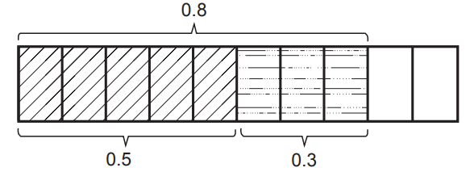
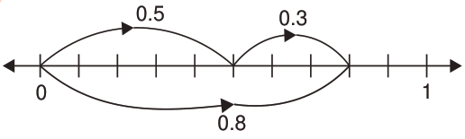

3.
4.
5.
Addition of decimal numbers
Decimal numbers are added by considering the value of each digit. There are various methods applied in adding decimals.
Addition of decimal numbers with one decimal point
When adding decimals, numbers in the decimal part are added first followed by whole numbers.
Example 1
0.5 + 0.3
Solution
Use the following diagram.

Alternatively;

From the diagram, 0.8 has 0 whole number and 8 as part of 10. Using this diagram, 0.5 + 0.3 = 0.8. Therefore, 0.5 + 0.3 = 0.8.